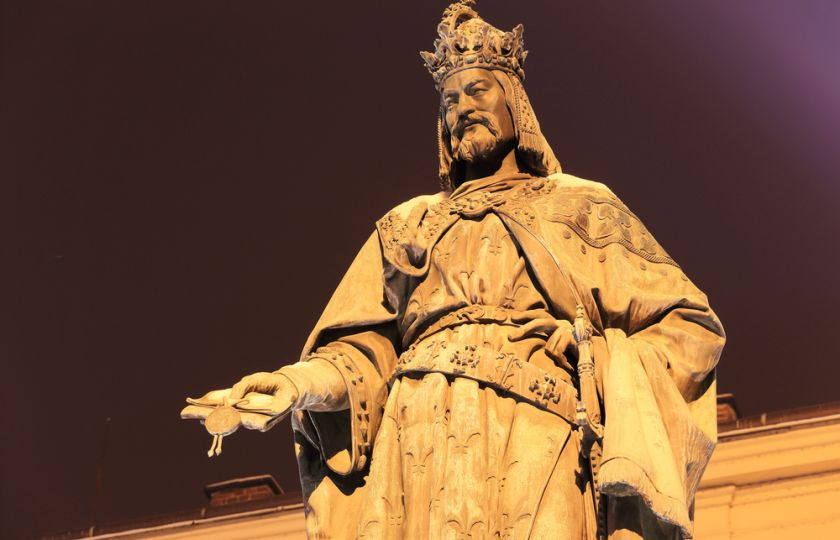

Stručná historie Prahy
Počátky Prahy se datují do roku 880, kdy byl založen Pražský hrad a Praha vznikla jako jeho podhradí. Díky tomu, že osady v podhradí obdržely městské svobody, vznikla Malá Strana a Staré Město.
V roce 1348 bylo založeno Nové Město císařem Karlem IV. , čímž se Praha stala jedním z velkoměst ve středověké Evropě. Za jeho vlády byla založena Univerzita Karlova, nejstarší univerzita ve střední Evropě nebo byl postaven Karlův most, tehdy zvaný Kamenný, který nahradil Juditin most, který byl zničený povodněmi.
Konec prosperity byl způsoben stavovským povstáním v letech 1618 – 1620. Poté přišla třicetiletá válka, jež způsobila, že z Prahy se stalo provinční město kde probíhala násilná rekatolizace a byla vylidněná emigrací a válečnými útrapami. Nový rozkvět začal až s příchodem industrializace.
V roce 1748 za vlády císaře Josefa II. bylo spojeno Staré Město, Nové Město, Malá Strana a Hradčany v jednotné hlavní město Prahu. V 19. století byla Praha centrem českého národního obrození a 28. října 1918 se stala hlavním městem samostatné Československé republiky.
V letech 1922, 1968 a 1974 bylo k Praze připojeno několik menších obcí z okolí, a tak Praha byla československou metropolí až do konce roku 1992. V Praze se mimo jiné odehrávalo tzv. Pražské jaro, které bylo násilně potlačeno 21.8.1968 vstupem vojsk Varšavské smlouvy. Na konci listopadu 1989 se zde ale zrodila tzv. sametová revoluce, jež vedla k pádu komunismu a totalitní vlády a znamenala počátek návratu k demokratickému politickému systému.
1.1.1993 se Praha stala hlavním městem České republiky, která vznikla po rozdělení Československa.
